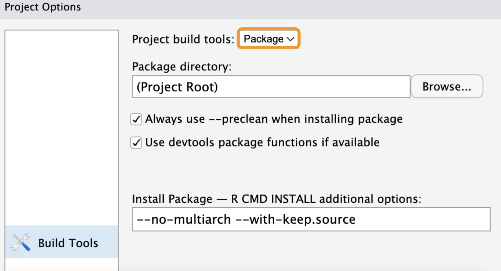
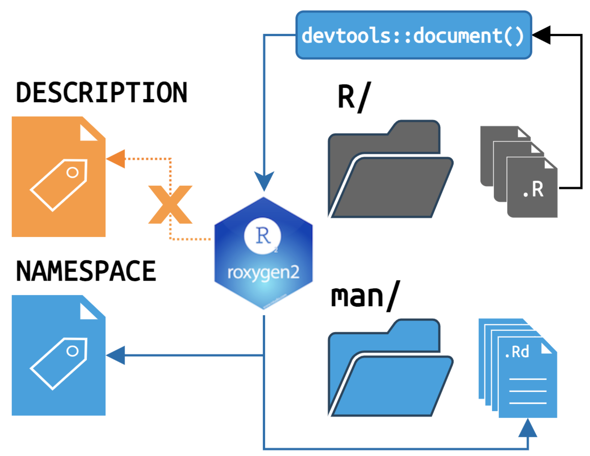
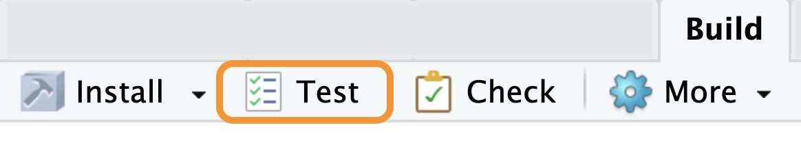

Martin Frigaard (Atorus)
Why are you here?
golem, leprechaun, or rhino) and not sure which one to useShiny
Packages
Development
Documentation
Dependencies
Data
Launch
External files
Testing
Branch: main
Branch: 02_movies-app
Branch: 03_proj-app
Branch: 03_proj-app
Shiny automatically sources the files in the R/ folder and serves the external resources in www/
.R files in the R/ directory adjacent to the app.R/server.R/ui.R files - Shiny loadSupport()www within your Shiny app directory - Building a user interfaceBranch: 04_description
Branch: 04_description
‘The Package, Version, License, Description, Title, Author, and Maintainer fields are mandatory.’ - Writing R Extensions
Branch: 05_rproj
Branch: 05_rproj
Branch: 05_rproj
These are accessible under:
Tools > Project Options… > Build Tools
Change Project build tools to Package

Branch: 05_rproj
Branch: 06a_create-package
Create new Shiny app-packages (or convert Shiny projects) with usethis::create_package()
Assuming it’s being called from the desired location of your new app-package:
Branch: 06a_create-package
Many of the DESCRIPTION fields inevitably require revision
We can handle this during the creation process with the fields argument
fields = list(Package = 'moviesApp',
Version = '0.0.0.9000',
Title = 'movies app',
Description = 'A movie-review Shiny application.',
"Authors@R" = NULL,
Author = utils::person(
given = "John",
family = "Smith",
email = "John.Smith@email.io",
role = c("aut", "cre")),
Maintainer = utils::person(
given = "John",
family = "Smith",
email = "John.Smith@email.io"),
License = "GPL-3")Branch: 06a_create-package
check_name: verifies your Shiny app-package name is valid for CRAN
open: can be set to FALSE if you don’t need Posit Workbench to open in a new session
usethis::create_package(path = getwd(),
fields = list(Package = 'moviesApp',
Version = '0.0.0.9000',
Title = 'movies app',
Description = 'A movie-review Shiny application.',
"Authors@R" = NULL,
Author = utils::person(
given = "John",
family = "Smith",
email = "John.Smith@email.io",
role = c("aut", "cre")),
Maintainer = utils::person(
given = "John",
family = "Smith",
email = "John.Smith@email.io"),
License = "GPL-3"),
check_name = FALSE,
open = FALSE)Branch: 06b_devtools
load_all() is the development function you’ll use the most during package development
document() creates the help files and writes the NAMESPACE
install() installs a local version of your app-package
Branch: 06b_devtools
‘load_all() removes friction from the development workflow and eliminates the temptation to use workarounds that often lead to mistakes around namespace and dependency management’ - Benefits of load_all(), R Packages, 2ed
Load the package when anything changes in the R/ folder.
Branch: 06b_devtools
document() writes dependencies into the NAMESPACE and creates the help files in the man/ folder
Branch: 06b_devtools
Future calls to document() will result in the following output:
Branch: 06b_devtools
Install a package after the initial setup, after major changes to the code, documentation, or dependencies, and before committing or sharing.
==> R CMD INSTALL --preclean --no-multiarch --with-keep.source moviesApp
* installing to library ‘/path/to/pkg/R-4.2/x86_64-apple-darwin17.0’
* installing *source* package ‘moviesApp’ ...
** using staged installation
** R
** byte-compile and prepare package for lazy loading
No man pages found in package ‘moviesApp’
** help
*** installing help indices
** building package indices
** testing if installed package can be loaded from temporary location
** testing if installed package can be loaded from final location
** testing if installed package keeps a record of temporary installation path
* DONE (moviesApp)Branch: 06b_devtools
devtools::check() performs a series of checks to ensure a package meets the standards set by CRAN
Consider check() like ‘quality control’ for:
NAMESPACE dependenciesR Packages recommends using check() often, but I agree with the advice in Mastering Shiny on using check() with app-packages,
“I don’t recommend that you [call
check()] the first time, the second time, or even the third time you try out the package structure. Instead, I recommend that you get familiar with the basic structure and workflow before you take the next step to make a fully compliant package.”
BREAK!
Recap: Shiny stuff
DESCRIPTION file and fields
.Rproj files and fields
devtools functions (load_all(), document(), install())
Branch: 07_roxygen2
@title, @description, @param(s), @return, and @examples (if applicable)load_all() & document()Application functions
@seealso@familyUse Markdown for code, emphasis, hyperlinks, etc.
Include any additional information in a new @section
Branch: 07_roxygen2
Branch: 07_roxygen2
What happens when we load, document, and install moviesApp, then try to launch the standalone app function?
Branch: 08a_pkg-exports
How can I export movies_app() from moviesApp?
Branch: 08b_pkg-imports
Branch: 08b_pkg-imports
document() writes the NAMESPACE (not the DESCRIPTION)NAMESPACE must be in DESCRIPTION
I highly recommend reading Confusion about imports in R packages, 2ed
Branch: 08b_pkg-imports
Branch: 09_data
There are three locations for data in your app-package:
data/
data-raw/
inst/extdata/
Branch: 09_data
data/
pkg::data) or data() functionBranch: 09_data
data-raw/
data/data-raw files with usethis::use_data_raw()Branch: 09_data
inst/extdata/
Branch: 09_data
system.file() gives us access to the contents of our installed package
“This is your package.”
“The contents of the
inst/subdirectory will be copied recursively to the installation directory.” - Writing R extensions, Package subdirectories
BREAK!
The next section covers practices specific to app-packages.
Launching apps
app.R
Standalone app function
External resources
www/
App UI function arguments
dev/ and prod/ apps
Branch: 10_launch-app
There are two common methods for launching Shiny apps:
Branch: 10_launch-app
What should go in the standalone app function?
Branch: 10_launch-app
The display_type() is a helper function that controls where the application is launched.
Has options for viewer pane, window, and browser.
Prints option to the Console
display_type <- function(run = "w") {
if (run == "p") {
options(shiny.launch.browser = .rs.invokeShinyPaneViewer)
} else if (run == "b") {
options(shiny.launch.browser = .rs.invokeShinyWindowExternal)
} else if (run == "w") {
options(shiny.launch.browser = .rs.invokeShinyWindowViewer)
} else {
options(shiny.launch.browser = NULL)
}
shinyViewerType <- getOption('shiny.launch.browser') |>
attributes() |>
unlist() |>
unname()
cli::cli_alert_info("shinyViewerType set to {shinyViewerType}")
}Branch: 10_launch-app
Include display_type() if movies_app() is interactive
Branch: 10_launch-app
What should go in app.R?
Turn off loadSupport()
Load package
Include Shiny options
withr::with_options(new = list(shiny.autoload.r = FALSE), code = {
if (!interactive()) {
sink(stderr(), type = "output")
tryCatch(
expr = {
library(moviesApp)
},
error = function(e) {
pkgload::load_all()
}
)
} else {
pkgload::load_all()
}
moviesApp::movies_app(
options = list(test.mode = TRUE), run = 'p')
})Branch: 11a_inst-www
We have external files referenced in our UI (i.e., in www)
After loading, documenting, and installing, we can access shiny.png with system.file()
Branch: 11a_inst-www
Adding external files (formerly in www)
addResourcePath()Branch: 11b_inst-bslib
inst/ can store alternate images and resources
Branch: 11c_inst-dev
We can also store entire apps in inst/
Branch: 11d_inst-prod
Apps can be deployed from a dedicated inst/ folder
BREAK!
Recap: Package stuff
roxygen2 & dependencies
Data
Launching apps
External resources
The following sections will cover:
Setting up your test suite
Test fixtures and helpers
Testing modules and system tests
Branch: 12a_tests-specs
Setting up your testthat test suite:
DESCRIPTION file, testthat (>= 3.0.0) is listed under SuggestsConfig/testthat/edition: 3 is also listed in the DESCRIPTION to specify the testthat editiontests/ folder is created, with a testthat/ subfoldertests/testthat/testthat.R file is createdBranch: 12a_tests-specs
For every .R file in R/ …
…create a test file in tests/testthat/
Branch: 12a_tests-specs
Branch: 12a_tests-specs
Build pane

test()
Ctrl/Cmd + Shift + T
test_active_file()
Ctrl/Cmd + T
test_coverage_active_file()
Ctrl/Cmd + Shift + R
Branch: 12a_tests-specs
Applications should have some version of the following specifications:
Capture the needs and expectations of the end-user
Describe the high-level capabilities of the application
The testable, specific behaviors (i.e., inputs and outputs)
Branch: 12a_tests-specs
A traceability matrix is a table that ‘traces’ the user specifications to features and functional requirements (and the tests they give rise to)
| User Specifications | Features | Requirements | Tests |
| US1: Shiny App Scatter Plot Data Visualization for Movie Review Explorer | F1.1: IMDB and Rotten Tomatoes data with continuous (i.e., scores) and categorical (i.e., mpaa) variables. | FR 1.1: The app should display movie review data from IMDB and Rotten Tomatoes containing both continuous and categorical variables stored in a tabular format. | ? |
Branch: 12a_tests-specs
In Behavior-driven development (BDD), requirements are written plain language ‘feature files’ using a series of keywords:
Branch: 12a_tests-specs
The Feature and Background can be included in nested testthat::describe() blocks
Branch: 12a_tests-specs
For Scenarios, each Then keyword should have a corresponding testthat::it() or testthat::test_that()
Branch: 12b_tests-fixtures
Test fixtures can be anything used to create repeatable test conditions (data, file paths, functions, etc.)
Branch: 12b_tests-fixtures
We can use nested describe() functions to document the Feature and Background
testthat::describe(
"Feature: Scatter plot data visualization
As a film data analyst
I want to explore movie review data from IMDB.com
So that I can analyze relationships between movie reivew metrics",
code = {
testthat::describe(
"Background:
Given I have data with IMDB movie reviews
And the data contains continuous variables like 'rating'
And the data contains categorical variables like 'mpaa'",
code = {
})
})Branch: 12b_tests-fixtures
Illustrate the test with clear Given, When, Then steps
testthat::it(
"Scenario: Create scatter plot
Given I have launched the movie review exploration app,
When the scatter plot renders,
Then the points on the x axis should represent 'Ratings'
And the points on the y axis should represent 'Length'
And the points should be colored by 'MPAA' rating
And the size of the points should be set to '2'
And the opacity of the points should be set to '0.5'",
code = {
})Branch: 12b_tests-fixtures
make-tidy_ggp2_movies: code used to create a ‘tidy’ version of the ggplot2movies::movies dataBranch: 12b_tests-fixtures
Write a test using the static data test fixture
ggp2_scatter_inputs <- list(x = "rating",
y = "length",
z = "mpaa",
alpha = 0.75,
size = 3,
plot_title = "Enter plot title")
tidy_ggp2_movies <- readRDS(test_path("fixtures",
"tidy_ggp2_movies.rds"))
app_graph <- scatter_plot(tidy_ggp2_movies,
x_var = ggp2_scatter_inputs$x,
y_var = ggp2_scatter_inputs$y,
col_var = ggp2_scatter_inputs$z,
alpha_var = ggp2_scatter_inputs$alpha,
size_var = ggp2_scatter_inputs$size)
expect_true(ggplot2::is.ggplot(app_graph))Branch: 12c_tests-helpers
“Helper files are a mighty weapon in the battle to eliminate code floating around at the top-level of test files.” Testthat helper files, R Packages, 2ed
Branch: 12c_tests-helpers
Consider the inputs passed to the scatter_plot() function in the previous test:
We could write var_inputs() to store these values in a list
Branch: 12c_tests-helpers
This would allow us to use var_inputs() with the same ‘reactive syntax’ we use in the module server function
This removes duplicated code, but it’s not clear for the reader what var_inputs() contains or where it comes from
Branch: 12c_tests-helpers
If you have repeated code in your tests, consider the following questions below before creating a helper function:
Does the code help explain what behavior is being tested?
Would a helper make it harder to debug the test when it fails?
It’s more important that test code is obvious than DRY, because it’s more likely you’ll be dealing with this test when it fails (and you’re not likely to remember why all the top-level code is there)
Branch: 12c_tests-helpers
make_ggp2_inputs() creates inputs for the scatter_plot() utility function
Branch: 12c_tests-helpers
The logger package is great for verbose test output.
Branch: 12d_tests-modules
We want tests for specific module behaviors (i.e., communicating or transferring values)
Branch: 12d_tests-modules
What scenarios call for a snapshot test?
testthat::it("Scenario: Scatter plot initial x, y, color values
Given the movie review application is loaded
When I view the initial scatter plot
Then the scatter plot should show 'IMDB Rating' on the x-axis
And the scatter plot should show 'Audience Score' on the y-axis
And the points on the scatter plot should be colored by 'MPAA Rating'
And the size of the points should be set to '2'
And the opacity of the points should be set to '0.5'", code = { testthat::it("Scenario: Change x, y, color values for plotting
Given the movie review application is loaded
When I choose the variable 'IMDB number of votes' for the x-axis
And I choose the variable 'Critics Score' for the y-axis
And I choose the variable 'Genre' for the color
Then the scatter plot should show 'IMDB number of votes' on the x-axis
And the scatter plot should show 'Critics Score' on the y-axis
And the points on the scatter plot should be colored by 'Genre'", code = {Branch: 12d_tests-modules
Values from mod_var_input_ui() are passed to setInputs()
Compare with session$returned()
shiny::testServer(app = mod_var_input_server, expr = {
# set inputs
session$setInputs(y = "imdb_rating",
x = "audience_score",
z = "mpaa_rating",
alpha = 0.5,
size = 2,
plot_title = "Enter plot title")
# test against inputs in mod_var_input_ui()
testthat::expect_equal(object = session$returned(),
expected = list(y = "imdb_rating",
x = "audience_score",
z = "mpaa_rating",
alpha = 0.5,
size = 2,
plot_title = "Enter plot title"))
})Branch: 12d_tests-modules
We know the values are being returned from mod_var_input_server()
“how can we test if the reactive values (
selected_vars) are passed intomod_scatter_display_server()?”
Branch: 12d_tests-modules
If we pass the values from the variable input module to args = list(), we get an error:
shiny::testServer(app = mod_scatter_display_server,
args = list(var_inputs =
list(x = "critics_score",
y = "imdb_rating",
z = "mpaa_rating",
alpha = 0.5,
size = 2,
plot_title = "Enter Plot Title")), expr = {
testthat::expect_equal(object = inputs(),
expected = list(x = "critics_score",
y = "imdb_rating",
z = "mpaa_rating",
alpha = 0.5,
size = 2,
plot_title = "Enter Plot Title"))
})Branch: 12d_tests-modules
We can fix this by simulating how selected_vars is used in testServer()
If we wrap the values in reactive() and pass them as var_inputs to args, this simulates the reactive values in selected_vars
inputs() is the object used to create the graph in the call to renderPlot()
shiny::testServer(app = mod_scatter_display_server,
args = list(var_inputs =
shiny::reactive(
list(x = "critics_score",
y = "imdb_rating",
z = "mpaa_rating",
alpha = 0.5,
size = 2,
plot_title = "Enter Plot Title"))), expr = {
testthat::expect_equal(object = inputs(),
expected = list(x = "critics_score",
y = "imdb_rating",
z = "mpaa_rating",
alpha = 0.5,
size = 2,
plot_title = "Enter Plot Title"))
})Branch: 12d_tests-modules
If pause execution with the debugger, we can see the difference:
Branch: 12d_tests-modules
We can check other input values by passing them to var_inputs in args = list()
These values simulate alternate user inputs being passed from the variable input module (as selected_vars)
Branch: 12d_tests-modules
“In terms of your testing strategy, you shouldn’t bother yourself with ‘is Shiny generating the correct structure so that the plot will render in the browser?’ That’s a question that the Shiny package itself needs to answer (and one for which we have our own tests).”
“The goal for your tests should be to ask ‘is the code that I wrote producing the plot I want?’ There are two components to that question:
- Does the plot generate without producing an error?
- Is the plot visually correct?
testServeris great for assessing the first component here. - Server Function Testing, Shiny Documentation
Branch: 12d_tests-modules
The outputs in the display module are handled by the render*() functions, so we need to verfiy ‘does the plot generate without producing an error?’
We can also build the graph in the display module and confirm with is.ggplot()
…or we can do a sanity check by passing plot to print()
plot <- scatter_plot(movies,
x_var = inputs()$x,
y_var = inputs()$y,
col_var = inputs()$z,
alpha_var = inputs()$alpha,
size_var = inputs()$size) +
ggplot2::labs(title = inputs()$plot_title,
x = stringr::str_replace_all(tools::toTitleCase(
inputs()$x), "_", " "),
y = stringr::str_replace_all(tools::toTitleCase(
inputs()$y), "_", " ")) +
ggplot2::theme_minimal() +
ggplot2::theme(legend.position = "bottom")
testthat::expect_true(ggplot2::is.ggplot(plot))Branch: 12f_tests-system
Setting up shinytest2:
Install shinytest2 and run use_shinytest2()
Adding shinytest2::load_app_env() to tests/testthat/setup-shinytest2.R
Adding *_.new.png to .gitignore
Adding _\\.new\\.png$ to .Rbuildignore
Setting active project to /path/to/moviesApp
Adding shinytest2 to Suggests field in DESCRIPTION
Setting active project to <no active project>
Branch: 12f_tests-system
shinytest2 installation checklist:
Branch: 12f_tests-system
Ideally we’d have one test recording per feature.
Branch: 12f_tests-system
If we’ve been writing BDD scenarios, the tests are relatively easy to record:
Scenario: Change dropdown values for plotting
Given the movie review application is loaded
When I choose the variable 'IMDB number of votes' for the x-axis
And I choose the variable 'Critics Score' for the y-axis
And I choose the variable 'Genre' for the color
And I choose the size of the points to be 3
And I choose the opacity of the points to be 0.7Branch: 12f_tests-system
Branch: 12f_tests-system
Test file is saved in tests/testthat/test-shinytest2.R
The test file contains the contents of our scenario.
library(shinytest2)
test_that("{shinytest2} recording: moviesApp-feature-01", {
app <- AppDriver$new(name = "moviesApp-feature-01",
height = 800, width = 1173)
app$set_inputs(`vars-y` = "imdb_num_votes")
app$set_inputs(`vars-x` = "critics_score")
app$set_inputs(`vars-z` = "genre")
app$set_inputs(`vars-alpha` = 0.7)
app$set_inputs(`vars-size` = 3)
app$set_inputs(`vars-plot_title` = "New plot title")
app$expect_values()
}) Then the scatter plot should show 'IMDB number of votes' on the x-axis
And the scatter plot should show 'Critics Score' on the y-axis
And the points on the scatter plot should be colored by 'Genre'
And the size of the points on the scatter plot should be 3
And the opacity of the points on the scatter plot should be 0.7
And the title of the plot should be 'New Plot Title'Branch: 12f_tests-system
We can create system tests using the feature and scenario descriptions, BDD functions, and AppDriver$new()
testthat::describe("Feature 1: Scatter plot data visualization dropdowns
...", code = {
testthat::it("Scenario: Change dropdown values for plotting
Given ...
When ...
Then ...", {
app <- AppDriver$new(name = "moviesApp-feature-01", height = 800, width = 1173)
app$set_inputs(`vars-y` = "imdb_num_votes")
app$set_inputs(`vars-x` = "critics_score")
app$set_inputs(`vars-z` = "genre")
app$set_inputs(`vars-alpha` = 0.7)
app$set_inputs(`vars-size` = 3)
app$set_inputs(`vars-plot_title` = "New plot title")
app$expect_values()
})
})Shiny App-Packages
DESCRIPTION file and fields
.Rproj files and fields
devtools function workflow
roxygen2 & dependencies
Data
Launching apps
External resources
BDD tests, fixtures & helpers
Testing modules & system tests
Read more:
Shiny testing (Shiny documentation)
Shiny App-packages (in development)